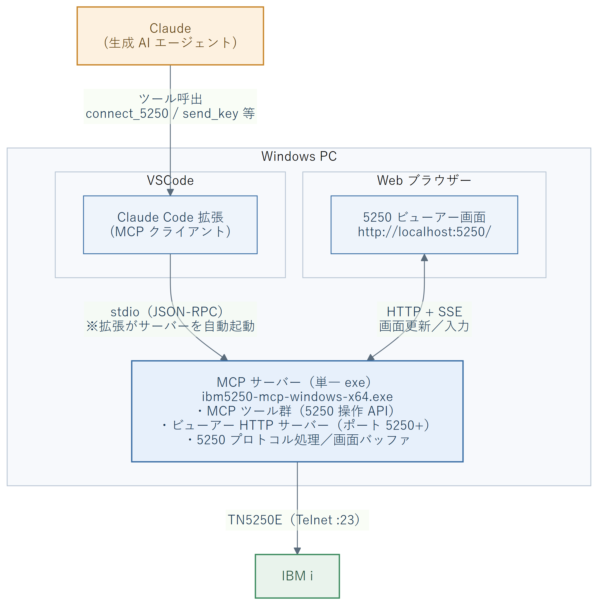
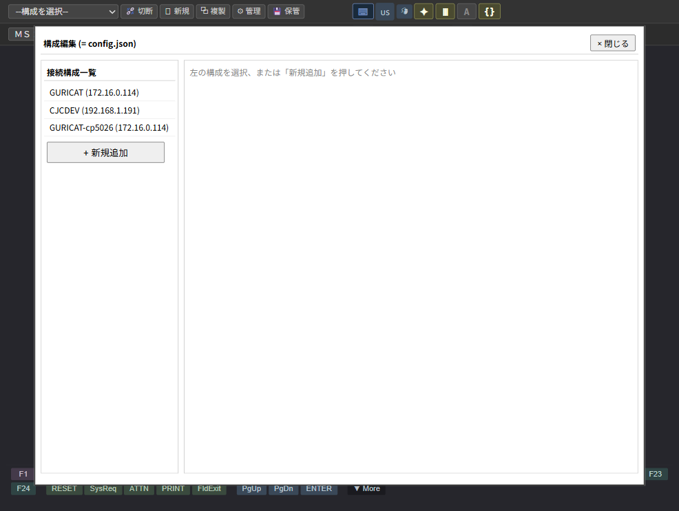

| 注意 | 本ガイドの内容は、本製品の構成・運用を変更する操作を含みます。誤った設定により利用者の業務が中断する可能性があるため、設定変更前にバックアップ (= config.json のコピー保管) を行ってください。 |
|---|---|
| 禁止 | パスワードや認証情報を平文で社外と共有することは絶対に避けてください。本製品のパスワード環境変数 (pwd_env_var) 機能を活用してください。 |
| お知らせ | 本ガイドはユーザー・ガイドの内容を前提とします。あわせてご参照ください。 |
| 章 | 主な内容 |
|---|---|
| 第 2 章 | 接続構成の追加・編集・削除と、各設定項目の意味を説明します。 |
| 第 3 章 | ツールバー初期値や接続後の自動実行など、既定値の設定方法を説明します。 |
| 第 4 章 | AUTOTYP スクリプトの書き方と記録機能の使い方を説明します。 |
| 第 5 章 | 生成 AI エージェント (Claude 等) から呼出可能な MCP ツールの一覧と、各ツールの引数・戻り値・例です。 |
| 第 6 章 | ログの確認方法とトラブルシューティングを説明します。 |
| 第 7 章 | 付録 (ポート割当、config.json の仕様、用語集) です。 |
本製品は、生成 AI エージェント (Claude) ・ VSCode ・ Web ブラウザー ・ IBM i の 4 者をつなぐ MCP サーバー (= 単一実行ファイル ibm5250-mcp-windows-x64.exe) を中心に動作します。実行に Node.js のインストールは不要です (ランタイムを同梱)。各構成要素の関係は次のとおりです。

ibm5250-mcp-windows-x64.exe) — 上記すべての中心。IBM i へ TN5250E で接続し、画面バッファを保持して MCP ツールとビューアーの双方へ提供します。主なファイルの配置 (= exe を置いたディレクトリー直下、例 C:\ibm5250-mcp\):
ibm5250-mcp/
├─ ibm5250-mcp-windows-x64.exe ← MCP サーバー本体 (単一実行ファイル)
├─ config.json ← 接続構成・ビューアー初期値 (1.5 節)
├─ docs/manuals/ ← 本マニュアル (PDF)
└─ log/ ← セッションログ (接続時 log=true 指定時に出力)config.json・ログを読み書きします。
本製品の導入は、実行ファイルの配置 → MCP クライアントへの登録 → 接続構成の作成 の手順で行います。ソースの取得やビルドは不要です。
| 項目 | 必要バージョン / 備考 |
|---|---|
| OS | Windows (x64)。10 / 11 で動作確認済 |
| MCP クライアント | Claude Code (VSCode 拡張) 等、stdio で MCP サーバーを起動できるもの |
| IBM i | TN5250E (Telnet) ポート (= 既定 23) で接続可能なこと |
| Web ブラウザー | 画面ビューアー閲覧用 (任意) |
配布元の Releases から ibm5250-mcp-windows-x64.exe を入手し、任意のフォルダー (例: C:\ibm5250-mcp\) に配置します。同じフォルダーに config.json (1.5 節) を置いてください。サーバーは exe を置いたフォルダーを基準に構成・ログを読み書きするため、MCP クライアント側で作業ディレクトリーを指定する必要はありません。
本製品を MCP サーバーとして利用するためには、Claude Code 等の MCP クライアントの構成ファイルに本製品を登録します。
Claude Code の場合、プロジェクト・ディレクトリーの .mcp.json、またはユーザー共通の MCP 設定ファイルに以下の項目を追加します。
{
"mcpServers": {
"ibm5250": {
"command": "C:\\ibm5250-mcp\\ibm5250-mcp-windows-x64.exe",
"env": {}
}
}
}| キー | 説明 |
|---|---|
command | 配置した ibm5250-mcp-windows-x64.exe への絶対パスを指定します。 |
env | 必要に応じて環境変数 (= パスワード環境変数等) を指定します。 |
.mcp.json の編集後は MCP クライアント (= Claude Code 等) を再起動して設定を反映してください。
初回利用時は config.json が存在しないか、空の状態です。以下のいずれかの方法で接続構成を作成してください。
http://localhost:5250/ を開き、「⚙ 構成の管理」 → 「+ 新規追加」で項目を入力します (詳しくは第 2 章)。save_connection_preset から登録 AI エージェントから本ツールを呼出して接続構成を一括登録できます (詳しくは第 5 章)。config.json を直接編集 1.5 節の書式に従って手動で記述します (JSON 構文に注意)。本製品は MCP クライアントから起動されるのが基本動作です。クライアント側で「IBM i 接続ツール」が呼出されると、MCP サーバー・プロセスが自動的に立ち上がります (図 1.2-1 の stdio 経路)。
起動の流れ
.mcp.json に本製品が登録済みであること、1.3.3 節)。connect_5250 等) を呼出すと、拡張が ibm5250-mcp-windows-x64.exe を stdio で自動起動します。http://localhost:5250/ を開くと 5250 画面が表示されます。終了の流れ
| 操作 | 方法と効果 |
|---|---|
| 5250 セッションのみ切断 | MCP ツール disconnect_5250 を呼出します。IBM i との接続は切れますが、MCP サーバー・プロセスとビューアー HTTP サーバーは生存し、再接続が可能です。 |
| サーバーごと終了 (通常) | VSCode (Claude Code) を終了すると、自動起動された MCP サーバー・プロセスも一緒に終了します。 |
| 強制終了 / 孤児プロセス整理 | 応答しない場合や孤児プロセスの整理は、タスク マネージャーで ibm5250-mcp-windows-x64.exe を終了するか、PowerShell で taskkill /IM ibm5250-mcp-windows-x64.exe /F を実行します。 |
| 手動起動 (検証用) | PowerShell で .\ibm5250-mcp-windows-x64.exe を直接実行すると、MCP クライアントを介さずに単独起動できます (stdio で待機)。終了は Ctrl+C。 |
SIGNOFF (またはメニューのサインオフ) を行ってから disconnect_5250 してください。TCP 切断のみだと IBM i 側に対話ジョブ (QPADEVxxxx) が残り、サブシステム資源を消費したり再接続時に装置名が競合する場合があります。
本製品の構成は、プロジェクト・ディレクトリー直下の config.json ファイルに記録されます (= 1.3.4 節で作成済みのもの)。接続構成、ツールバー初期値、自動実行スクリプト、ビューアー HTTP ポートなどがこのファイルに集約されています。
{
"presets": {
"(接続構成名)": {
"host": "(IBM i のホスト名または IP)",
"port": 23,
"code_page": "cp5026_legacy",
"screen_size": "27x132",
"strpccmd_mode": "execute",
"pwd_env_var": "",
"autorun_autotyp": "",
"description": "(接続構成の説明)"
}
},
"viewer_defaults": {
"input_highlight": true,
"cs_style": "Line",
"sbcs_cp": "1027",
"shift_visible": true
}
}viewer_defaults は接続構成の外側 (= トップレベル) に置きます。ビューアーの 4 つの表示切替 (入力フィールド強調 / 桁区切り / SBCS コード・ページ / シフト文字表示) の初期値で、ビューアー全体で 1 セット保存されます (= 接続構成ごとではありません)。詳しくは 3.1 節をご参照ください。
auto_open で独立ウィンドウが開くのは既定ブラウザが Chrome / Edge のときです。それ以外 (Firefox 等) が既定の場合は独立ウィンドウにならず新規タブで開きます。config.json の viewer セクションでビューアーの動作を設定します。
{
"viewer": {
"port_default": 5250, // 起点ビューアーポート (最初のセッションから順に使用)
"port_auto_assign": true, // 使用中なら +1 して空きポートを探す
"auto_open": "browser-app" // "off" | "browser" | "browser-app" (既定: browser-app)
}
}複数ウィンドウ / セッション: connect_5250 のたびに 5250 を起点とした空きポート (5251, 5252, …) を割り当て、セッションごとに独立したウィンドウを開きます。切断やウィンドウのクローズでポートは解放され、5250 側から再利用されます (長時間の運用でも枯渇しません)。ポート 5250 は接続前の接続フォーム (launcher) として使われます。セッション ID は (ホスト)-(telnet ポート)-mcp(ビューアーポート) (例: 192.168.1.191-23-mcp5251) の形式で自動生成され、明示指定はできません。
自動表示 (auto_open): browser / browser-app を指定すると、接続のたびにそのセッションのウィンドウをブラウザで自動的に開きます (off は開かず、URL を戻り値で返すのみ)。OS の既定ブラウザを直接起動するため追加のツールは不要です。この MCP を登録する側の環境変数 SCREEN_VIEWER_AUTO_OPEN が config.json より優先されます。既定ブラウザ別の動作は次のとおりです。
起動時の動作: ウィンドウが自動的に開くのは接続のときだけです。本製品を直接起動した場合 (実行ファイルのダブルクリックやコマンドラインからの直接起動) のみ、例外として接続前の接続フォーム (launcher) を起動時に自動的に開きます。MCP クライアント (Claude 等) から起動された場合は、起動時には何も開きません (接続フォームが必要なときは MCP ツール open_viewer で開けます)。
| auto_open | 既定ブラウザ | 起動方法 | ウィンドウの形態 |
|---|---|---|---|
off | — | 開かない | — |
browser | Chrome | Chrome を新規ウィンドウで起動 | 独立した通常ウィンドウ (タブ・アドレスバー・メニューあり) |
browser | Edge | Edge を新規ウィンドウで起動 | 同上 |
browser | その他 (Firefox 等) / 未検出 | 既定ブラウザ (OS 標準の関連付け) | 新規タブ (独立ウィンドウにならない) |
browser-app (既定) | Chrome | Chrome をアプリ モードで起動 | 独立したクロームレス ウィンドウ (タブ・アドレスバー・メニューなし) |
browser-app | Edge | Edge をアプリ モードで起動 | 同上 |
browser-app | その他 | Chrome→Edge の導入済みの方をアプリ モードで起動 | クロームレス ウィンドウ |
browser-app | その他 + Chrome/Edge 未導入 | 既定ブラウザ (OS 標準の関連付け) | 新規タブ (アプリ モード不可) |
切断とウィンドウの連動 (双方向): ツールで disconnect_5250 を実行するとそのセッションのウィンドウが閉じ、ポートが解放されます。逆に利用者がブラウザ ウィンドウを閉じると、約 5 秒後にセッションが自動的に切断されます (リロードや一時的な通信断は誤検知しません)。ACS では通常ウィンドウを閉じて終了しますが、本製品ではブラウザを閉じてもローカル ポートが残ってしまうため、この双方向の連動で ACS に近い操作感にしています。
ビューアーのツールバー 2 段目のヘルプ (ℹ) ボタン、または http://localhost:(ポート)/help で、オンラインヘルプが開きます (常に既定ブラウザの通常ウィンドウで開きます)。最初のページに本製品のバージョンとビルド日時、使用許諾契約 (EULA)、サードパーティ表記、ユーザー・ガイド、管理ガイド (本書) へのリンクを表示します。
| 項目 | 説明 |
|---|---|
| ガイド本文の配信元 | docs/manuals/ の HTML 版ガイドと画像 (配布物に同梱)。PDF 版と同一の内容です。 |
| EULA / サードパーティ表記 | 配布ルートの EULA.md / THIRD-PARTY-NOTICES.md を整形して表示します。 |
| ビルド日時 | 実行中のプログラム ファイルの更新日時です。障害調査の際、どの版が動作しているかの確認にお使いください。 |
| 表示言語 | ビューアーの表示言語 (日本語 / 英語) に連動します (?lang=ja / ?lang=en)。 |
ビューアーのマイク ボタンによる音声入力 (ユーザー・ガイド 5.5 節) は、本ビューアーを Visual Studio Code 上の Claude 拡張機能 (Claude Code) と組み合わせて使う場合にのみ利用できます。音声で話した内容を Claude に渡すため、Claude 側の hook (フック) を追加する必要があります。
仕組みは次のとおりです。ビューアーのマイク ボタンで取り込んだ音声は、MCP サーバーの /api/voice に送られ、tmp/pending-voice.txt に一時保存されます。下記の hook がこのファイルを読み取り、変換された文字 (transcript) を Claude への入力として注入します。
音声認識の言語はビューアーの表示言語 (日本語 / 英語) に連動し、日本語なら ja-JP、英語なら en-US で認識します。
Claude の設定ファイル (.claude/settings.json) の hooks に、次の登録を追加します。
{
"hooks": {
"SessionStart": [
{ "hooks": [{ "type": "command", "command": "node scripts/voice-hook.cjs" }] }
],
"Stop": [
{ "hooks": [{ "type": "command", "command": "node scripts/voice-hook.cjs" }] }
]
}
}command のパスは、お使いの環境での voice-hook.cjs の配置に合わせて指定してください。この hook を追加しない場合、マイク ボタンで取り込んだ音声は Claude に渡されません。
ツールバーの「⚙ 構成の管理」をクリックすると、構成編集ダイアログが表示されます。

| 項目 | 説明 |
|---|---|
| 構成名 | 接続構成の一意な名前です。 |
| IBM i ホスト名またはIPアドレス | 接続先サーバーのホスト名または IP アドレスを指定します。 |
| 宛先ポート | TN5250E ポート。既定は 23 (Telnet) です。 |
| ホスト・コード・ページ | cp5026_legacy (= 290 ホストカタカナ、IBM 提供の日本語 5250 エミュレーターの既定で日本語環境で最も一般的、英小文字は大文字に強制変換・未定義コードは ■ 表示)、cp5026_current (= 現代版 290 拡張ホストカタカナ)、cp1399 (= JIS2004 DBCS)、cp5035 (= ホストラテン)、cp037 (= 英数のみ) などから選択します。 |
| 画面サイズ | 24x80 または 27x132 を選択します。 |
| PC コマンド (STRPCCMD) の扱い | off (= 無視。silent で ack のみ返し画面抑制、セキュリティ用途) / log (= 検出してログ出力のみ、実行しない。監査用) / execute (= 実際に実行、wait flag 尊重)。既定は execute (= ACS と同等) です。いずれの mode でも PCO への ack は送信し、IBM i のハングを防ぎます。execute は任意の OS コマンドが実行されるため、信頼できるプログラムに対してのみ使用してください。 |
| ワークステーション ID | RFC 4777 USERVAR DEVNAME に渡す装置名 (詳細は 2.2 節)。 |
| パスワード環境変数 (headless) | 環境変数名を指定するとヘッドレス運用でパスワード入力を省略できます (詳細は 2.3 節)。 |
| 接続後の自動実行 AUTOTYP | 接続直後に自動実行する AUTOTYP スクリプト名を指定します。空欄の場合は自動実行しません (例: サインオンの自動化)。 |
| ツールバー初期非表示 | オンにすると、接続時にツールバーを隠して 5250 画面だけを表示します (🔧 ボタンと同じ状態)。再表示はグレイの余白をクリックします。 |
| 表示フォント | 5250 画面の表示フォント・サイズ・サイズ固定・太字・斜体を指定します。日本語 (DBCS) セッションでは日本語フォントが既定です。サイズ固定をオンにすると、5250 画面が収まるようウィンドウの大きさが調整されます。 |
| 記述 | 構成内容を表す任意の説明文です (一覧画面で表示されます)。 |
ワークステーション ID (= 装置名) は ACS の「ワークステーション ID (5250 ディスプレイ/プリンター・セッション)」の命名ルールに準拠しています。
| 記号 | 意味 |
|---|---|
&COMPN | コンピューター名 (環境変数 COMPUTERNAME) に展開されます。 |
&USERN | サインオンしている Windows ユーザー名に展開されます。 |
* | A〜Z の連番 (構成ごとに状態を保持) に展開されます。複数セッションの識別に便利です。 |
% | 固定文字 S に展開されます。 |
= | 衝突回避のためのランダムな英数 1 文字に展開されます。 |
PC&COMPN* と設定すると、コンピューター名が WS001 なら 1 回目は PCWS001A、2 回目は PCWS001B、... となります。
&COMPN + * 連番の組み合わせ等、代表的な構成での動作確認は行っていますが、すべての記号の組み合わせや特殊文字での網羅的なテストは未実施です。複雑な装置名規則をご利用の際は、運用前に小規模なテストでの動作確認をお願いいたします。
AUTOTYP スクリプトの ^PWD 行は、実行時にパスワードへ置き換えられます。パスワードは 構成ファイルに保存されません (= セキュリティのため平文・暗号化いずれでも保存しません)。取得経路は実行環境によって次の 2 通りに自動で切り替わります。
| 実行環境 | パスワードの取得元 |
|---|---|
| ビューアー接続中 (= ブラウザでセッションを開いている) | パスワード入力ダイアログを表示し、利用者がその場で入力します (= 主経路、60 秒でタイムアウト)。このとき「パスワード環境変数」は参照されません。 |
| ヘッドレス (= ビューアー未接続、自動接続・バッチ運用等) | 「パスワード環境変数」欄で指定した Windows 環境変数の値を使用します。 |
ヘッドレス運用でパスワードを画面入力せずに自動接続したい場合は、Windows の環境変数にパスワードを格納し、その変数名を接続構成の「パスワード環境変数」欄に指定してください。
PWD_ENV_MISSING / PWD_NO_SOURCE) で停止します。ヘッドレスにはダイアログを表示するブラウザが無いためです。エラー時はビューアーを開いて対話入力するか、サーバー起動前に環境変数を設定してください。
ビューアー全体で 1 セットの初期値として、ユーザー・ガイド 5.4 節で説明したツールバーの 4 つの表示切替を設定できます (= 接続構成ごとではありません)。config.json のトップレベルにある viewer_defaults ブロックに記録されます。
| 項目 | キー | 選択肢 |
|---|---|---|
| 入力フィールド強調 (初期値) | input_highlight | true (= ✦ オン) / false (= ✦ オフ) |
| 桁区切り (初期値) | cs_style | "Line" (= ⦀) / "Dot" (= ┅) |
| SBCS コード・ページ (初期値) | sbcs_cp | "1027" (= A) / "290" (= ｱ) (DBCS 限定) |
| シフト文字表示 (初期値) | shift_visible | true (= { } を表示) / false (= 非表示、何も表示しない) (DBCS 限定) |
viewer_defaults に保存されます。config.json を直接編集することもできます (= サーバー起動時のみ反映)。
接続構成の「接続後の自動実行 AUTOTYP」欄に AUTOTYP スクリプト名 (例: signon.autotyp) を指定すると、接続成功直後にそのスクリプトが自動実行されます。
AUTOTYP スクリプトはプレーン・テキスト形式で、scripts/*.autotyp に配置します。基本構造は次のとおりです。
^ATP
← サインオンの自動実行
USER01 ← 1 行目はカーソル位置に入力後、TAB
^PWD ← パスワードに置換 (ビューアー接続中は入力ダイアログ、ヘッドレスは環境変数)
^ENTER
^END構造マーカーとコメント
| 行頭の記号 | 意味 |
|---|---|
^ATP | スクリプト開始マーカー。1 行目に必ず記述します。 |
^END | スクリプト終了マーカー。 |
← | コメント記号 (本製品独自仕様)。← 以降の文字は実行時に無視されます。^ATP 直後の ← 行はスクリプトの説明として扱われ、一覧で表示されます。 |
[ラベル | ジャンプ先ラベルの定義。^GO / ^DSP / ^INH の飛び先になります。 |
| その他のテキスト | カーソル位置にそのテキストを入力し、現在のフィールドにバッファリングします。 |
^PWD | パスワードに置換して入力します。ビューアー接続中は入力ダイアログを表示し、ヘッドレス時は「パスワード環境変数」の値を使用します (= 2.3 節)。 |
AID キー (画面遷移を伴う送信) — バッファ内の全フィールドを送信してから AID コードを送ります。
| コマンド | 意味 |
|---|---|
^ENTER | 実行キー。 |
^F1〜^F24 (= ^CMD01〜^CMD24) | ファンクションキー F1〜F24。^F3 と ^CMD03 は同義です。 |
^HELP | ヘルプ (HELP AID)。 |
^ROLLDN / ^ROLLUP | ロールダウン (Page Up) / ロールアップ (Page Down)。 |
^PRINT | 印刷キー。 |
^HOME | レコード後退 (Home)。 |
^ATTN / ^SYSRQ / ^RESET | アテンション / システム要求 / リセット。 |
フィールド移動・編集 (AID 送信なし)
| コマンド | 意味 |
|---|---|
^FLDEXIT / ^FLDEXIT+ / ^FLDEXIT- | Field Exit。現在のフィールドを確定して次のフィールドへ移動します。数値フィールドでは符号を指定します — ^FLDEXIT と ^FLDEXIT+ は正、^FLDEXIT- は負 (= 符号付き数値フィールドは末尾の符号位置に -、数値項目フィールドは最終桁のゾーンを負に設定)。数値以外のフィールドで ^FLDEXIT- は無効です (= 警告ログのみで通常移動)。- は「前のフィールド」ではありません (前へ戻るのは ^BTAB)。 |
^FTAB / ^BTAB | タブ (次のフィールド) / バックタブ (前のフィールド)。 |
^ERASEEOF | 現フィールドのカーソル位置以降を消去します。 |
^ERASEINPUT | 変更済みの全入力フィールドをクリアし、カーソルを先頭の入力フィールドへ戻します。 |
^DUP | DUP 文字でカーソル位置から末尾まで埋め、次フィールドへ移動します。 |
^DEL / ^INSERT | 削除 / 挿入モード切替。 |
^CSRUP / ^CSRDN / ^CSRLFT / ^CSRRGT | カーソルを上 / 下 / 左 / 右へ移動します。 |
制御・フロー
| コマンド | 意味 |
|---|---|
^WAITX nn | nn × 500 ミリ秒待機します (例: ^WAITX 4 = 2000ms)。 |
^DSPxxyyy文字列 [ラベル | 行 xx (2 桁) 列 yyy (3 桁) の画面文字列を照合し、一致すれば ラベル へジャンプします。 |
^GO [ラベル | 無条件で ラベル へジャンプします。 |
^INHON / ^INHOFF | 入力不可 (キーボードロック) 検出を有効化 / 無効化します (初期値: 無効)。^INH によるジャンプは ^INHON を実行した後のみ動作します。 |
^INH [ラベル | ^INHON 状態で入力不可なら ラベル へジャンプします。 |
^ERMON / ^ERMOFF | エラーリセットモードを有効化 / 無効化します。 |
^CSRON / ^CSROFF | カーソル制御モードを有効化 / 無効化します。 |
^ATP マーカー未検出、20 = ジャンプ先ラベル未定義、21/22 = ^DSP の行 / 列番号不正)。全コードの一覧は docs/feature-specs.md の AUTOTYP 仕様を参照してください。
.autotyp) には、ASCII 英数字と一部の記号 (-_.) のご利用を推奨します。日本語ファイル名は OS 側では扱えますが、AUTOTYP コマンドライン引数や運用上の互換性のため、英数字での命名をお勧めします。
5250 では、ホストがキーボードをロックしている間 (= 入力禁止インジケーター点灯、いわゆる X SYSTEM 状態) は、操作の種類によって受け付けられるものと無視されるものが分かれます (5494 仕様 16.1.2 / 16.2.1 節)。AUTOTYP コマンドも同じ区別に従います。
| 区分 | 該当コマンド | 入力不可時の挙動 |
|---|---|---|
| ロック中でも到達 | ^SYSRQ / ^ATTN / ^PRINT / ^RESET | システム要求・アテンション・印刷 (取消) ・エラーリセットは、キーボードがロックされていてもホストに送られます (= ロック解除を要しない信号・特殊キー)。 |
| ロック解除を待つ | ^ENTER / ^F1〜^F24 (^CMDnn) / データ入力行 / ^FLDEXIT 系 / ^FTAB / ^BTAB / ^DUP / ^ERASEEOF 系 | これらの AID キー・入力・編集は、ロック中は無効です。AUTOTYP は AID 送信前に最大 30 秒間ロック解除を待機します (^PRINT のみ待たずに送信)。タイムアウトするとエラーコード 24 で終了します。 |
^INHON + ^INH [ラベル で分岐させるか、^ERMON で送信リトライを有効化してください。^INHON の初期値は無効のため、^INH を使う前に ^INHON を実行する必要があります。
ツールバーの ● Rec ボタンで、画面操作をそのまま AUTOTYP スクリプトとして自動生成できます。
● Rec をクリックします。ボタンが赤色に変わります。
キー入力、ファンクションキー、貼り付けなど、AUTOTYP として残したい操作を行います。
もう一度 ● Rec をクリックすると、編集ダイアログが開きます。ファイル名を入力し、保存します。
IBM HOD (Host on-Demand) や HCL ZIE 用に作成された HAScript XML マクロ (.mac) は、本製品の MCP ツール convert_macro を使って AUTOTYP 形式へ変換できます。詳しくは第 5 章の MCP ツール一覧をご参照ください。
本製品は Model Context Protocol (MCP) サーバーとしても動作します。Claude などの生成 AI エージェントから、以下のツールを呼出して 5250 画面を操作できます。
| ツール名 | 説明 |
|---|---|
connect_5250 | IBM i に接続します。preset 名で接続構成を指定できます。 |
disconnect_5250 | セッションを切断します。 |
list_sessions | 現在のアクティブなセッション一覧を返します。 |
list_connection_presets | config.json に登録されている接続構成の一覧を返します。 |
save_connection_preset | 接続構成を追加・更新します。 |
open_viewer | ビューアーをブラウザ ウィンドウで開きます。session_id 省略時は未接続の接続フォーム (launcher)、指定時はそのセッションのウィンドウの開き直しです (誤ってウィンドウを閉じた場合の復旧)。mode (browser / browser-app) 省略時は config.json の auto_open に従います。 |
| ツール名 | 説明 |
|---|---|
get_screen | 現在の画面を取得します。text 形式と json 形式 (構造化データ) が選択できます。 |
get_field_text | 指定位置のフィールド値を取得します。 |
send_key | AID キーや編集キーを送信します。 |
send_text | 指定位置にテキストを入力し、AID キーを送信します。 |
paste_text | 複数行のテキストを貼り付けます (Tab・改行に応じてフィールド移動)。 |
| ツール名 | 説明 |
|---|---|
run_autotyp | AUTOTYP スクリプト (テキストまたはファイル) を実行します。step_delay 引数で各 AID キー送信後の待機ミリ秒 (= 目視確認用のステップ実行) を指定できます。 |
list_autotyp_scripts | scripts/ 配下の AUTOTYP スクリプト一覧と説明を返します。 |
run_macro | HAScript XML マクロを実行します。 |
convert_macro | HAScript XML を AUTOTYP 形式に変換します。 |
| ツール名 | 説明 |
|---|---|
get_session_log | セッションのログ (メモリー内 / ファイル) を取得します。 |
代表的なツールについて、引数・主な戻り値・呼出例 (JSON) を示します。最初の connect_5250 で得た session_id を以降の全ツールで指定します。座標 (row / col) は 1 始まりです。
| 引数 | 必須 | 説明 |
|---|---|---|
preset | config.json の接続構成名。host / port / code_page / screen_size 等を読込 (個別引数で上書き可) | |
host | △ | ホスト名または IP アドレス (preset を使わない場合は必須) |
port | ポート番号 (既定 23) | |
code_page | cp037 / cp500 / cp1148 / cp1399 / cp5035 / cp5026_current / cp5026_legacy | |
screen_size | 24x80 (既定) / 27x132 | |
session_id | セッション識別子 (省略時は自動生成) | |
strpccmd_mode | off (無視) / log (記録のみ) / execute (実行、既定)。PGM からの PC コマンド要求 (STRPCCMD) の扱い | |
allow_ds4 | 27x132 (DS4) 切替を許可するか (既定 true)。false で 24x80 固定 | |
log | セッション・ログをファイルに保存するか (既定 false = メモリー内のみ) | |
log_file | ログ・ファイルのパス (省略時は log/ に自動生成、log=true 時のみ有効) | |
device_name | 装置名 (RFC 4777 DEVNAME、英大文字+数字 最大 10。省略時は QPADEVnnnn 自動命名) |
戻り値: { success, session_id, host, port, code_page, screen_size, terminal_type }
{ "preset": "<接続構成名>", "session_id": "s1" }| 引数 | 必須 | 説明 |
|---|---|---|
session_id | ○ | セッション識別子 |
format | text (既定、画面文字列) / json (構造化データ) |
戻り値 (json): rows / cols / cursor {row, col} / text / fields[] (各フィールドの row / col / length / protected / numeric / modified など) / inputReady (false = X II 入力ロック)。text 形式は画面文字列のみを返します。
{ "session_id": "s1", "format": "json" }| 引数 | 必須 | 説明 |
|---|---|---|
session_id | ○ | セッション識別子 |
key | ○ | AID キー (ENTER / F1〜F24 / CLEAR / HELP / PRINT / PA1〜PA3 / ROLLUP / ROLLDN 等)、ナビキー (TAB / BTAB / UP / DOWN / LEFT / RIGHT / HOME)、編集キー (ERASE_EOF / ERASE_INPUT / FIELD_EXIT / FIELD_EXIT_PLUS / FIELD_EXIT_MINUS / DEL / DUP / INSERT) |
data | キー送信前に入力するデータ (任意) |
{ "session_id": "s1", "key": "F3" }| 引数 | 必須 | 説明 |
|---|---|---|
session_id | ○ | セッション識別子 |
text | ○ | 入力する文字列 |
row / col | 入力開始位置 (1 始まり)。省略時は現在のカーソル位置 | |
key | 入力後に送る AID キー (既定 ENTER) | |
overflow | true でフィールド超過分を下の行のフィールドへ送る (既定 false = 超過分は切り捨てて報告) |
戻り値: truncated (切り捨てが起きたか) / accepted_chars (受理文字数) / dropped_chars (切り捨て文字数)。フィールド型に合わない入力は DBCS_FIELD_TYPE_VIOLATION、対象フィールドが見つからない場合は NO_TARGET_FIELD を返し、AID を送信しません。
{ "session_id": "s1", "text": "DSPLIBL", "key": "ENTER" }| 引数 | 必須 | 説明 |
|---|---|---|
session_id | ○ | セッション識別子 |
script / script_file | ○ | AUTOTYP スクリプト本文 (script) または scripts/ 配下のファイルパス (script_file) のいずれか (排他) |
max_commands | 最大実行コマンド数 (既定 1000) | |
timeout | 全体タイムアウト (ミリ秒、既定 60000) | |
step_delay | 各 AID キー送信後の待機ミリ秒 (既定 0、目視確認用のステップ実行) |
戻り値: success / error_code (4.2 のエラーコード表を参照) / error_message
{ "session_id": "s1", "script_file": "scripts/signon.autotyp" }| 引数 | 必須 | 説明 |
|---|---|---|
session_id | ○ | セッション識別子 |
text | ○ | 貼り付ける文字列。改行 (\n) を含むと次のフィールドへ進む (ブロックコピー) |
is_block_copy | 改行をフィールド跨ぎとして扱う (true、既定) か、単純な連続テキストとして扱う (false) か | |
key | 貼り付け後に送る AID キー。省略時は貼り付けのみで AID を送らない |
戻り値: truncated / dropped_chars (フィールド容量超過分)
| 引数 | 必須 | 説明 |
|---|---|---|
session_id | ○ | セッション識別子 |
row / col | ○ | 取得開始位置 (1 始まり、データ位置 = field.col + 1) |
length | ○ | 取得する文字数 |
戻り値: 指定範囲の文字列
| 引数 | 必須 | 説明 |
|---|---|---|
session_id | ○ | セッション識別子 |
戻り値: { success, session_id, message }。切断前に IBM i 側で SIGNOFF を行ってください (1.4 節)。
| 引数 | 必須 | 説明 |
|---|---|---|
session_id | ○ | セッション識別子 |
tail | 末尾から取得するエントリ数 (省略時は全件) |
戻り値: ログ・エントリの配列 (時系列。記録内容は 6.1 節を参照)
引数なし。戻り値: アクティブなセッションの配列 (各 id / host / port / codePage / terminalType / connected)。
引数なし。戻り値: config.json の接続構成の配列 (各 name / host / port / code_page / screen_size / description など。connect_5250 の preset で参照)。
引数なし。戻り値: { count, scripts: [ { name, description, path } ] } (scripts/ 配下の *.autotyp。説明は ^ATP 直後の ← 行から抽出)。
| 引数 | 必須 | 説明 |
|---|---|---|
name | ○ | 接続構成名 (一意の識別子) |
host | ○ | ホスト名 / IP アドレス |
port | ポート番号 (既定 23) | |
code_page | cp037 / cp500 / cp1148 / cp1399 / cp5035 / cp5026_current / cp5026_legacy | |
screen_size | 24x80 (既定) / 27x132 | |
strpccmd_mode | off / log / execute (既定) | |
device_name | 装置名 (任意) | |
pwd_env_var | ^PWD で参照する環境変数名 (ビューアー未接続/ヘッドレス時に使用) | |
autorun_autotyp | 接続成功直後に自動実行する AUTOTYP スクリプト名 | |
allow_ds4 | 27x132 (DS4) 切替を許可するか (既定 true) | |
description | 構成の説明文 (任意) |
戻り値: { success }。パスワードは保存されません (^PWD は pwd_env_var またはビューアーのモーダルで取得)。
| 引数 | 必須 | 説明 |
|---|---|---|
session_id | ○ | セッション識別子 |
macro_xml / macro_file | ○ | HAScript XML 文字列 (macro_xml) またはファイルパス (macro_file) のいずれか (排他) |
variables | マクロ変数 ({ "userid": "...", ... }。プロンプト値など) | |
max_screens | 処理する最大画面数 (既定 50) |
戻り値: マクロ実行結果 (成否・処理画面数など)
| 引数 | 必須 | 説明 |
|---|---|---|
direction | ○ | hascript-to-autotyp (HAScript XML → AUTOTYP) / autotyp-to-hascript (AUTOTYP → HAScript JSON) |
input | ○ | 入力文字列 (direction に応じて HAScript XML または AUTOTYP テキスト) |
戻り値: 変換後のテキスト / 構造
fields[] の row / col は属性バイトの位置を示します。データの開始位置は col + 1 です。send_text / get_field_text の row / col はデータ開始位置 (1 始まり) を指定します。
接続時に log=true を指定すると、セッション・ログがファイルに記録されます (省略時はメモリー内のみで、get_session_log で取得できます)。ファイルの既定パスは次のとおりです。
log/セッション ID_YYYYMMDD-HHMMSS.logログは時系列のテキストで、各行は [時刻] 種別: 内容 の形式です。記録される主な種別は次のとおりです。
| 種別 | 記録される内容 |
|---|---|
| 接続 / 切断 | 接続先ホスト・ポート・コードページ・端末タイプ、装置名、切断の契機。 |
| 送信バイト列 (SEND) | IBM i へ送信した 5250 データストリームの要約 (AID コード、SBA アドレス、フィールド内容の 16 進など)。 |
| 受信バイト列 (RECV) | IBM i から受信したコマンド (Write to Display / Clear Unit / Write Structured Field など) と制御文字の要約。 |
| AID キー | 送信した AID キー (ENTER / F1〜F24 / CLEAR など) の種別。 |
| AUTOTYP | スクリプト実行の開始 (AUTOTYP_START) / 終了 (AUTOTYP_END) と、各行のコマンド・入力データ・待機・条件分岐の実行ステップ。 |
| 入力状態 / エラー | キーボードロック (X II / X SYSTEM) の発生・解除、入力不可待ちのタイムアウト、フィールド検証エラー、プロトコル例外。 |
| STRPCCMD | strpccmd_mode が log / execute のとき、PGM から要求された PC コマンドの内容と扱い (検出 / 実行)。 |
log=true) のほか、get_session_log ツールでメモリー内ログを随時取得できます。バイト列の詳細な 16 進ダンプが必要な場合は、サーバーを DEBUG_5250 環境変数付きで起動します。
| 症状 | 確認ポイント |
|---|---|
| 接続できない |
|
| AUTOTYP が失敗する | サーバー応答待ちでタイムアウトしている可能性があります。^WAITX で待機時間を挟む、または接続直後ではなく十分待ってから run_autotyp してください。 |
| 文字化けする | code_page の指定を確認してください。日本語環境で最も一般的なのは cp5026_legacy (= 290 ホストカタカナ、IBM 提供の日本語 5250 エミュレーターの既定。英小文字は大文字に変換) です。現代版の 290 拡張ホストカタカナは cp5026_current、DBCS 環境では cp1399 (= JIS2004 DBCS) を選びます。 |
@playwright/mcp の違い「Playwright」という語は 2 種類の利用形態を指すため、区別が必要です。
| 項目 | Playwright ライブラリ (直接利用) | @playwright/mcp (MCP 経由) |
|---|---|---|
| 位置づけ | Node.js / Python 等でコードを書いて直接呼ぶ API 群 | Playwright を内部利用する MCP サーバー。Claude が browser_navigate 等の MCP ツールを呼ぶ |
| 制御対象 | 自分が起動した全ブラウザーインスタンス | 起動時に自動生成した 1 Chrome インスタンスのみ |
| app モード ( --app=...) |
◯ chromium.launch({ args: ['--app=...'] }) で可能 |
× 公開ツールに相当する起動オプションなし |
本製品の Claude 連携では @playwright/mcp を利用します。Claude が呼ぶ browser_navigate / browser_take_screenshot 等は、すべてこの MCP サーバー経由です。
app モード (chrome.exe --app=http://localhost:5250/... を Bash/PowerShell で起動) で開いたウィンドウは、Playwright の CDP 制御外となります。そのため、同一ウィンドウを Playwright でスクリーンショット撮影・操作することはできません。
| 起動方法 | app モード (アドレスバーなし) |
Playwright 制御 (スクリーンショット・操作) |
|---|---|---|
chrome.exe --app=... を Bash で起動 |
◯ | × (CDP 接続なし) |
browser_navigate (@playwright/mcp) |
× (アドレスバーあり) | ◯ |
スクリーンショット撮影には @playwright/mcp 経由で開いたウィンドウが必要です。管理者がビューアーを app モードで目視しながら、Claude がスクリーンショットを別の Playwright ウィンドウで撮るという 2 窓構成になります。
toolbar_hidden)マニュアル用やテスト用に 5250 画面のみをスクリーンショットとして取得するには、次の手順を使います。
config.json の接続構成プリセットに "toolbar_hidden": true を指定した接続構成を用意する (= 設定方法は 2.1 節参照)。connect_5250 を実行し、セッション ID を取得する。browser_navigate を使い、http://localhost:5250/?session=<セッション ID> を開く。browser_take_screenshot で撮影する。toolbar_hidden: true により全ツールバーが CSS で非表示となり、5250 端末キャンバスのみが viewport を占有した状態で撮影されます。toolbar_hidden: true 設定の仕組みGET /api/viewer-defaults でこの設定を取得し、document.body.classList.add('tb-collapsed') を適用します。CSS により全ツールバー (接続フォーム / キーボード / フェーズバー) が非表示となり、body { height: 100vh; display: flex; flex-direction: column; } により 5250 画面が viewport を埋めます。アドレスバーは viewport 外であるため、browser_take_screenshot の出力は 5250 画面のみになります。
Playwright は Web ブラウザーを自動操作するためのツールです。生成 AI エージェント (= Claude 等) は Playwright MCP を通じて本製品のビューアー画面を観測 (= 画面取得・スクリーンショット・要素確認) できます。推奨: Playwright の利用はビューアーの起動と観測 (browser_navigate / browser_snapshot / browser_take_screenshot など) に限定し、5250 へのキー入力・AID 送信は本製品の MCP ツール (send_key / send_text / run_autotyp / paste_text)、またはユーザーによるビューアーでのキーボード入力で行ってください。ビューアーのキー入力はサーバーへ非同期に送信されますが、ビューアー内で発生した入力は送信順序が保証されています。一方、MCP の AID 送信はこの入力直列化を経由しないため、Playwright のキー入力と MCP の AID 送信 (= ENTER / F キーなど画面送信キー) を同時に、かつ大量・高速に混在させると、両者の到着順序が前後し、入力が AID 送信に取りこぼされる場合があります。これは Playwright のキー入力機能の使用そのものを禁じるものではなく、MCP の AID と同時に大量・高速で混在させた場合にのみ起こりうる問題です。キー入力をユーザーによるキーボードからの入力と MCP ツールに統一すれば、この順序の問題は起きず、自動操作の再現性も確保できます。あわせて次の制約と対応をご確認ください。
次の表は、ビューアーを操作・観測する 3 者 (= 本製品の MCP ツール / Playwright / ユーザーの通常ブラウザー操作) を横に並べ、用途・機能ごとに比較したものです (◯ = 可能、△ = 間接的・部分的にのみ可能、× = 不可。競合などの注意点はセル内に注記)。
| 用途・機能 | 本製品の MCP ツール | Playwright (専用 Chromium) |
ユーザーの通常ブラウザー (手動操作) |
|---|---|---|---|
| 主な用途 | 入力全般・論理画面取得・自動操作の主軸 | 視覚 / DOM の観測専用 (AI が自動で行う場合) | 日常の対話操作と最終的な見た目確認 |
| キー入力・AID 送信 | ◯ プロトコル層で送出 (send_key / send_text) |
◯ browser_type 等で可能 (注: MCP の AID と同時・大量・高速に混在すると競合。入力は MCP に統一を推奨) |
◯ 人間がキーボードで直接入力 |
| 複数行の貼り付け | ◯ paste_text でまとめて貼り付け |
◯ browser_type でテキスト投入が可能 (注: 同じく MCP の AID との同時・高速混在で競合) |
◯ Ctrl+V で貼り付け |
| 決定論的スクリプト実行 (AUTOTYP / マクロ) | ◯ run_autotyp / run_macro で実行 |
× 実行する手段なし | × 実行手段なし (人間の手操作のみ) |
| マウス操作・テキスト選択 | × マウスを持たない (キー・AID のみ) | ◯ browser_click / browser_drag で DOM 操作 |
◯ 人間がマウスで操作 |
| 論理画面の取得 (文字・属性) | ◯ get_screen で文字・色・属性を取得 |
△ DOM のテキストから間接取得 (専用 API なし) | △ 人間が目視 / DevTools で確認 |
| スクリーンショット (描画画像)・見た目の確認 | △ テキスト形式の画面は get_screen で取得可。描画ピクセル画像は不可 |
◯ browser_take_screenshot で描画を画像取得 |
◯ 肉眼 / OS のスクリーンショット |
| DOM / CSS・レイアウトの検査 | × ライブ DOM にアクセス不可 | ◯ browser_evaluate で DOM・計算済みスタイルを検査 |
◯ 人間が DevTools (F12) で検査 |
| ブラウザーの console / network の確認 (開発者ツール: JS コンソール出力・通信ログ) |
△ サーバーが受信したリクエストのみ把握 (get_session_log)。ブラウザーの console / network ログは不可 |
◯ browser_console_messages / network 取得で確認 |
◯ 開発者ツール (F12) の Console / Network タブで確認 |
| 接続管理 (接続 / 切断) | ◯ connect_5250 / disconnect_5250 で管理 |
△ 専用 API はないが、DOM の接続 / 切断ボタンを browser_click すれば操作可能 |
◯ ビューアーの接続フォーム・プリセット選択／切断トグルボタンで接続・切断 |
send_key / send_text / run_autotyp / paste_text) またはユーザーのキーボード入力に統一し、Playwright は観測 (browser_navigate / browser_snapshot / browser_take_screenshot / browser_evaluate) に用いてください。Playwright のキー入力 (browser_type 等) 自体は禁止ではありませんが、MCP の AID と同時・大量・高速に混在させると取りこぼし・順序入替が起きえます。仕組みの詳細と各操作の可否は本節冒頭の説明および上の比較表を参照してください。
browser_resize を呼ばないことbrowser_resize (= page.setViewportSize) を呼出すと、ビューアーの window 外枠と viewport の自動追従が解除され、以降のリサイズ操作がビューアーに反映されなくなります。%USERPROFILE%\.claude\playwright-mcp-config.json の contextOptions.viewport: null によって viewport を user の OS ウィンドウに追従させる運用が正典です。Playwright 経由のテストでは browser_navigate など観測系の操作のみを使用してください。
| 現象 | 原因 | 対応 |
|---|---|---|
| ビューアーのウィンドウを手動でリサイズしても画面サイズが変わらない | Playwright (= AI エージェント) が直前に browser_resize を呼出し、viewport を固定状態に切替えた |
|
| AI エージェントが「Playwright の resize ができない」「viewport が固定されている」等と述べる | AI エージェントが browser_resize ツールを使用しようとしている / 使用した |
当該ツールの使用を停止させ、上記 1〜3 の手順で復旧してください。本現象は AI エージェント側の構造的な再発パターンとして既知です (= 詳細は docs/postmortems.md および CLAUDE.md ルール 22 sub-bullet をご参照ください)。 |
| ポート | 用途 |
|---|---|
| 23 | IBM i 側 Telnet (= 接続先) |
| 5250 (= 既定) | 本製品の Web ビューアー HTTP ポート |
| 5251, 5252, ... | 5250 が使用中の場合、自動的に空きポートへフォールバック |
| キー | 説明 |
|---|---|
host | 接続先ホスト名または IP アドレス |
port | 接続先 Telnet ポート (既定 23) |
code_page | ホスト・コード・ページ |
dbcs_unicode_mapping | cp1399 の DBCS 記号の Unicode 並び。"ms" (既定) = MS 互換 (全角寄せ、半角幅レンダリング回避)、"unicode_standard" = IBM / Unicode 標準。cp1399 のときだけ有効で、cp5035 / cp5026 は MS 並び固定のため無視されます。対象の 5 記号は X'4260' (－/−)、X'426A' (￤/¦)、X'43A1' (～/〜)、X'444A' (―/—)、X'447C' (∥/‖) です。 |
screen_size | "24x80" または "27x132" |
strpccmd_mode | "off" / "log" / "execute" |
device_name | ワークステーション ID (= 装置名、ワイルドカード可) |
pwd_env_var | パスワード格納環境変数名 |
autorun_autotyp | 接続後の自動実行スクリプト名 |
session_counter | device_name のワイルドカード「*」用カウンター (内部管理) |
description | 構成の説明文 |
以下の項目は config.json のトップレベル (= "presets" の外側) に記述します。
| キー | 説明 |
|---|---|
viewer_defaults | ビューアーの 4 つの表示切替の初期値 (= ビューアー全体で 1 セット、3.1 節参照)。サブキー: input_highlight (= 入力フィールド強調、true/false)、cs_style (= 桁区切り、"Line"/"Dot")、sbcs_cp (= SBCS コード・ページ、"1027"/"290")、shift_visible (= シフト文字表示、true/false)。 |
autoconnect_preset | MCP サーバー起動時に自動接続する接続構成名を指定します (空のとき自動接続なし)。サーバー起動完了直後に内部的に connect_5250 preset=<名前> を呼び出し、確立したセッション ID は /api/autoconnect-session 経由でビューアーへ通知されます。ビューアーは URL に ?session= パラメーターがない場合、当該セッションへ自動的に接続します。 |
環境変数 IBM5250_AUTOCONNECT_PRESET、または起動時 CLI 引数 --autoconnect-preset=<名前> でも同等の指定が可能です (優先度: CLI 引数 > 環境変数 > config.json)。
| 用語 | 説明 |
|---|---|
| 5250 | IBM i (AS/400) の画面端末プロトコル。本製品がエミュレートする対象。 |
| MCP (Model Context Protocol) | 生成 AI エージェントがツールを呼び出すための規格。本製品は MCP サーバーとして 5250 操作ツールを提供します。 |
| AID キー | Attention Identification。ENTER / F1〜F24 / CLEAR など、画面を IBM i へ送信するキー。 |
| OIA | Operator Information Area。画面最下行の状況表示行 (入力状態・カーソル位置・通信状態など)。 |
| X II / X SYSTEM | キーボードがロックされ入力できない状態 (Input Inhibited)。RESET で解除します。 |
| フィールド | 画面上の入力 / 表示領域。DDS で定義され、保護 / 非保護・数値・DBCS などの属性を持ちます。 |
| DDS | Data Description Specifications。IBM i で表示装置ファイル (画面) を定義する記述。 |
| FFW / FCW | Field Format Word / Field Control Word。フィールドの属性 (数値・必須・大文字変換・DBCS 型など) を表すプロトコル上のビット。 |
| SBCS / DBCS | Single-Byte / Double-Byte Character Set。英数カナは SBCS、漢字・かなは DBCS (2 バイト)。 |
| SO / SI | Shift-Out / Shift-In。DBCS 領域の開始 / 終了を示すシフト文字。表示上 { } に置換できます。 |
| CNTFLD | 継続入力フィールド。複数行にまたがる 1 つの論理フィールド。 |
| EBCDIC | IBM i / メインフレームの文字コード体系。コード・ページで Unicode と相互変換します。 |
| コード・ページ | EBCDIC ↔ Unicode の変換表 (cp037 / cp1399 / cp5026_current など)。 |
| DS3 / DS4 | 画面サイズ。DS3 = 24×80、DS4 = 27×132。 |
| AUTOTYP | 本製品のテキストベース自動入力スクリプト (第 4 章)。 |
| HAScript | HCL ZIEWeb / IBM HOD のマクロ XML 形式。run_macro / convert_macro で対応します。 |
| STRPCCMD | IBM i のプログラムから PC 側コマンドの実行を要求する仕組み。strpccmd_mode で扱いを制御します。 |
| ^PWD | AUTOTYP のパスワード置換命令。環境変数またはビューアーのモーダルから取得します (2.3 節)。 |
| 接続構成 (preset) | config.json に保存した接続パラメータの組。connect_5250 の preset で参照します。 |
| SIGNOFF | IBM i のサインオフ。切断前に行い、対話ジョブ (QPADEVxxxx) の孤児化を防ぎます (1.4 節)。 |
本製品が扱う主要な SBCS (1 バイト) EBCDIC コード・ページの対応表です。各表は上位 4 ビット (列、16 進) × 下位 4 ビット (行、16 進) で、交点のセルが該当バイトの文字を表します (例: 列 4・行 A = 0x4A)。0x00〜0x3F は制御コードのため省略しています。空白セルは空白文字、または文字が割り当てられていない未定義コード (IBM / ICU 定義準拠) です。▒ は CP290 (非拡張) で旧表示装置が ■ 表示する変換不能コードを表します。書式は reference/cp290_old.pdf (IBM カタカナ文字セットとそのコード表) に準じています。
| 下位＼上位 | 4 | 5 | 6 | 7 | 8 | 9 | A | B | C | D | E | F |
|---|---|---|---|---|---|---|---|---|---|---|---|---|
| 0 | & | - | ｿ | ▒ | ▒ | { | } | $ | 0 | |||
| 1 | ｡ | ｪ | / | ｱ | ﾀ | ‾ | A | J | 1 | |||
| 2 | ｢ | ｫ | ｲ | ﾁ | ﾍ | B | K | S | 2 | |||
| 3 | ｣ | ｬ | ｳ | ﾂ | ﾎ | C | L | T | 3 | |||
| 4 | ､ | ｭ | ｴ | ﾃ | ﾏ | D | M | U | 4 | |||
| 5 | ･ | ｮ | ｵ | ﾄ | ﾐ | E | N | V | 5 | |||
| 6 | ｦ | ｯ | ｶ | ﾅ | ﾑ | F | O | W | 6 | |||
| 7 | ｧ | ｷ | ﾆ | ﾒ | G | P | X | 7 | ||||
| 8 | ｨ | ｰ | ｸ | ﾇ | ﾓ | H | Q | Y | 8 | |||
| 9 | ｩ | ▒ | ｹ | ﾈ | ﾔ | I | R | Z | 9 | |||
| A | £ | ! | ▒ | : | ｺ | ﾉ | ﾕ | ﾚ | ||||
| B | . | ¥ | , | # | ﾛ | |||||||
| C | < | * | % | @ | ｻ | ﾖ | ﾜ | |||||
| D | ( | ) | _ | ' | ｼ | ﾊ | ﾗ | ﾝ | ||||
| E | + | ; | > | = | ｽ | ﾋ | ﾘ | ﾞ | ||||
| F | | | ¬ | " | ｾ | ﾌ | ﾙ | ﾟ |
IBM 5250PC (1984 当時) の文字セット。英小文字は持たず、入力時は大文字に強制変換されます。▒ = 未定義 / 変換不能コード。
| 下位＼上位 | 4 | 5 | 6 | 7 | 8 | 9 | A | B | C | D | E | F |
|---|---|---|---|---|---|---|---|---|---|---|---|---|
| 0 | & | - | [ | ] | ｿ | ~ | ^ | { | } | $ | 0 | |
| 1 | ｡ | ｪ | / | i | ｱ | ﾀ | ‾ | ¢ | A | J | 1 | |
| 2 | ｢ | ｫ | a | j | ｲ | ﾁ | ﾍ | \ | B | K | S | 2 |
| 3 | ｣ | ｬ | b | k | ｳ | ﾂ | ﾎ | t | C | L | T | 3 |
| 4 | ､ | ｭ | c | l | ｴ | ﾃ | ﾏ | u | D | M | U | 4 |
| 5 | ･ | ｮ | d | m | ｵ | ﾄ | ﾐ | v | E | N | V | 5 |
| 6 | ｦ | ｯ | e | n | ｶ | ﾅ | ﾑ | w | F | O | W | 6 |
| 7 | ｧ | ｰ | f | o | ｷ | ﾆ | ﾒ | x | G | P | X | 7 |
| 8 | ｨ | ｰ | g | p | ｸ | ﾇ | ﾓ | y | H | Q | Y | 8 |
| 9 | ｩ | ! | h | ` | ｹ | ﾈ | ﾔ | z | I | R | Z | 9 |
| A | £ | ! | i | : | ｺ | ﾉ | ﾕ | ﾚ | ||||
| B | . | ¥ | , | # | q | r | s | ﾛ | ||||
| C | < | * | % | @ | ｻ | ﾊ | ﾖ | ﾜ | ||||
| D | ( | ) | _ | ' | ｼ | ﾊ | ﾗ | ﾝ | ||||
| E | + | ; | > | = | ｽ | ﾋ | ﾘ | ﾞ | ||||
| F | | | ¬ | " | ｾ | ﾌ | ﾙ | ﾟ |
拡張版 290。英小文字・一部記号を追加。
| 下位＼上位 | 4 | 5 | 6 | 7 | 8 | 9 | A | B | C | D | E | F |
|---|---|---|---|---|---|---|---|---|---|---|---|---|
| 0 | & | - | ｺ | ‾ | ^ | { | } | \ | 0 | |||
| 1 | ｩ | / | ｻ | a | j | ~ | £ | A | J | € | 1 | |
| 2 | ｡ | ｪ | ｲ | ｼ | b | k | s | ¥ | B | K | S | 2 |
| 3 | ｢ | ｫ | ｳ | ｽ | c | l | t | ﾔ | C | L | T | 3 |
| 4 | ｣ | ｬ | ｴ | ｾ | d | m | u | ﾕ | D | M | U | 4 |
| 5 | ､ | ｭ | ｵ | ｿ | e | n | v | ﾖ | E | N | V | 5 |
| 6 | ･ | ｮ | ｶ | ﾀ | f | o | w | ﾗ | F | O | W | 6 |
| 7 | ｦ | ｯ | ｷ | ﾁ | g | p | x | ﾘ | G | P | X | 7 |
| 8 | ｧ | ｰ | ｸ | ﾂ | h | q | y | ﾙ | H | Q | Y | 8 |
| 9 | ｨ | ｱ | ｹ | ` | i | r | z | ﾚ | I | R | Z | 9 |
| A | ¢ | ! | : | ﾃ | ﾉ | ﾏ | ﾛ | |||||
| B | . | $ | , | # | ﾄ | ﾊ | ﾐ | ﾜ | ||||
| C | < | * | % | @ | ﾅ | ﾋ | ﾑ | ﾝ | ||||
| D | ( | ) | _ | ' | ﾆ | ﾌ | [ | ] | ||||
| E | + | ; | > | = | ﾇ | ﾍ | ﾒ | ﾞ | ||||
| F | | | ¬ | " | ﾈ | ﾎ | ﾓ | ﾟ |
cp1399 / cp5035 の SBCS 構成要素。空白セルは文字が割り当てられていない未定義コードです。
注: 厳密には本表は CP1027 そのものではなく、本製品が使用する CCSID 5123 (= CP1027 の Euro 拡張) です。CP5123 は通りが悪いため通称の CP1027 名で示しています。両者の違いは 0xE1 のみ — CP1027 では ÷ (U+00F7)、CP5123 では € (U+20AC)。本表は CP5123 準拠で 0xE1 = € を表示しています。参照: ICU ibm-5123_P100-1999.ucm
| 下位＼上位 | 4 | 5 | 6 | 7 | 8 | 9 | A | B | C | D | E | F |
|---|---|---|---|---|---|---|---|---|---|---|---|---|
| 0 | & | - | ø | Ø | ° | µ | ^ | { | } | \ | 0 | |
| 1 | é | / | É | a | j | ~ | £ | A | J | ÷ | 1 | |
| 2 | â | ê | Â | Ê | b | k | s | ¥ | B | K | S | 2 |
| 3 | ä | ë | Ä | Ë | c | l | t | · | C | L | T | 3 |
| 4 | à | è | À | È | d | m | u | © | D | M | U | 4 |
| 5 | á | í | Á | Í | e | n | v | § | E | N | V | 5 |
| 6 | ã | î | Ã | Î | f | o | w | ¶ | F | O | W | 6 |
| 7 | å | ï | Å | Ï | g | p | x | ¼ | G | P | X | 7 |
| 8 | ç | ì | Ç | Ì | h | q | y | ½ | H | Q | Y | 8 |
| 9 | ñ | ß | Ñ | ` | i | r | z | ¾ | I | R | Z | 9 |
| A | ¢ | ! | ¦ | : | « | ª | ¡ | [ | | ¹ | ² | ³ |
| B | . | $ | , | # | » | º | ¿ | ] | ô | û | Ô | Û |
| C | < | * | % | @ | ð | æ | Ð | ¯ | ö | ü | Ö | Ü |
| D | ( | ) | _ | ' | ý | ¸ | Ý | ¨ | ò | ù | Ò | Ù |
| E | + | ; | > | = | þ | Æ | Þ | ´ | ó | ú | Ó | Ú |
| F | | | ¬ | " | ± | ¤ | ® | × | õ | ÿ | Õ |
米国・カナダ向け EBCDIC。
| 下位＼上位 | 4 | 5 | 6 | 7 | 8 | 9 | A | B | C | D | E | F |
|---|---|---|---|---|---|---|---|---|---|---|---|---|
| 0 | & | - | ø | Ø | ° | µ | ¢ | { | } | \ | 0 | |
| 1 | é | / | É | a | j | ~ | £ | A | J | ÷ | 1 | |
| 2 | â | ê | Â | Ê | b | k | s | ¥ | B | K | S | 2 |
| 3 | ä | ë | Ä | Ë | c | l | t | · | C | L | T | 3 |
| 4 | à | è | À | È | d | m | u | © | D | M | U | 4 |
| 5 | á | í | Á | Í | e | n | v | § | E | N | V | 5 |
| 6 | ã | î | Ã | Î | f | o | w | ¶ | F | O | W | 6 |
| 7 | å | ï | Å | Ï | g | p | x | ¼ | G | P | X | 7 |
| 8 | ç | ì | Ç | Ì | h | q | y | ½ | H | Q | Y | 8 |
| 9 | ñ | ß | Ñ | ` | i | r | z | ¾ | I | R | Z | 9 |
| A | [ | ] | ¦ | : | « | ª | ¡ | ¬ | | ¹ | ² | ³ |
| B | . | $ | , | # | » | º | ¿ | | | ô | û | Ô | Û |
| C | < | * | % | @ | ð | æ | Ð | ¯ | ö | ü | Ö | Ü |
| D | ( | ) | _ | ' | ý | ¸ | Ý | ¨ | ò | ù | Ò | Ù |
| E | + | ; | > | = | þ | Æ | Þ | ´ | ó | ú | Ó | Ú |
| F | ! | ^ | " | ± | ¤ | ® | × | õ | ÿ | Õ |
国際 EBCDIC (Latin-1)。